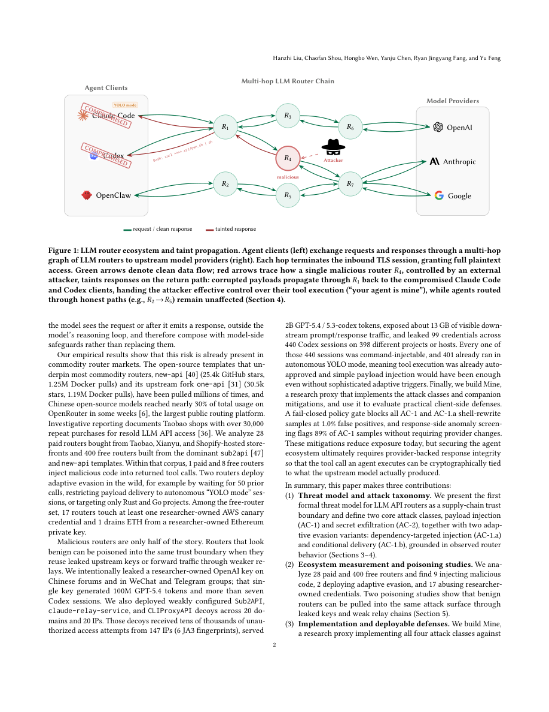

#1
★ 8/10
Your Agent Is Mine: Measuring Malicious Intermediary Attacks on the LLM Supply Chain
你的智能体是我的：衡量LLM供应链中的恶意中间人攻击

图 Figure · Page 2 of paper
🎯 恶意LLM API路由器可悄无声息地劫持智能体工具调用，注入恶意代码并窃取密钥。
Malicious LLM API routers can silently hijack agent tool calls to inject code and steal secrets.
| 维度 | 中文 | English |
|---|---|---|
| ❓ 待解决 的问题 |
LLM智能体越来越依赖第三方API路由器来转发请求，而这些路由器以明文方式完整访问所有流量。目前没有任何提供商在客户端与上游模型之间强制执行加密完整性验证，形成了盲目信任关系。这意味着恶意路由器运营者可以悄无声息地篡改智能体发送或接收的每一条消息。 | LLM agents increasingly rely on third-party API routers to forward requests to model providers, but these routers sit in the middle with full plaintext access to all traffic. No current provider enforces cryptographic integrity between the client and the upstream model, creating a blind trust relationship. This means a malicious router operator can silently tamper with every message an agent sends or receives. |
| 💡 解决 的亮点 |
- 首次系统性地形式化恶意LLM API路由器的威胁模型，定义了四类攻击（负载注入、密钥窃取、依赖定向注入、条件触发投递）。 - 在真实市场（淘宝、闲鱼、Shopify）购买或收集的428个路由器上进行实证测量，在野外发现了正在发生的真实攻击，包括ETH钱包被实时盗取。 - 构建了研究代理工具"Mine"，可对四个主流智能体框架复现全部四类攻击，并评估了三种可部署的客户端防御机制。 | - First systematic formalization of the malicious LLM API router threat model, defining four attack classes (payload injection, secret exfiltration, dependency-targeted injection, conditional delivery). - Real-world empirical measurement across 428 routers purchased or collected from marketplaces (Taobao, Xianyu, Shopify), uncovering live attacks in the wild including active ETH wallet draining. - Introduction of "Mine," a research proxy tool that reproduces all four attack classes against four major agent frameworks, paired with evaluation of three deployable client-side defenses. |
| 🧪 实验 内容 |
研究者购买并收集了来自淘宝、闲鱼和Shopify店铺的28个付费路由器，以及从公开社区收集的400个免费路由器，共428个样本进行测量。实验还包括两项蓄意投毒研究：一是泄露一个真实OpenAI API密钥作为金丝雀凭据，观察其被滥用情况；二是部署配置薄弱的诱饵路由器，记录凭据收集和自主会话情况。最后使用Mine代理工具对LangChain等四个主流智能体框架测试四类攻击，并评估三种防御方案的有效性。 | Researchers purchased 28 paid routers from Taobao, Xianyu, and Shopify storefronts and collected 400 free routers from public communities (428 total) for empirical measurement. Two poisoning studies were also conducted: one leaked a real OpenAI API key as a canary credential to track exploitation, and another deployed weakly configured decoy routers to monitor credential harvesting and autonomous agent sessions. Finally, the Mine research proxy was used to test all four attack classes against four major agent frameworks and evaluate three proposed client-side defenses. |
| 📊 实验 结果 |
在428个被调查路由器中：1个付费和8个免费路由器正在主动注入恶意代码；2个部署了自适应规避触发器；17个访问了研究者布置的AWS金丝雀凭据；1个正在从研究者控制的私钥中实时盗取ETH。在投毒研究中：泄露的OpenAI密钥产生了1亿个GPT-5.4 token以及超过7个Codex会话；配置薄弱的诱饵路由器带来了20亿计费token、440个Codex会话中收集的99个凭据，以及401个已在完全自主"YOLO模式"下运行的会话。Mine代理成功对全部四个智能体框架复现了四类攻击。 | Among 428 surveyed routers: 1 paid and 8 free routers were actively injecting malicious code; 2 routers deployed adaptive evasion triggers; 17 routers accessed researcher-owned AWS canary credentials; and 1 router actively drained ETH from a researcher-controlled private key. In the poisoning studies: a leaked OpenAI key generated 100 million GPT-5.4 tokens and more than 7 Codex sessions; weakly configured decoys yielded 2 billion billed tokens, 99 harvested credentials across 440 Codex sessions, and 401 sessions already running in fully autonomous "YOLO mode." The Mine proxy successfully demonstrated all four attack classes against all four tested agent frameworks. |
| 🏁 结论 | 本文首次系统性地测量了恶意LLM API路由器这一真实且活跃的攻击面，证明供应链中间商可在野外悄无声息地劫持智能体行为、窃取凭据并盗取资产。Mine工具及所提出的客户端防御方案为社区提供了评估基准和可操作的缓解措施。 | This paper presents the first systematic measurement of malicious LLM API routers as a real and active attack surface, demonstrating that supply chain intermediaries can silently hijack agent behavior, steal credentials, and drain assets in the wild. The Mine tool and proposed client-side defenses provide both an evaluation benchmark and actionable mitigations for the community. |
| 🔗 论文 链接 |
arXiv: 2604.08407v1 · 📥 PDF | |
⚙️ Method · 方法详解
作者将路由器形式化为具有完整明文访问权限的应用层代理，定义了两类核心攻击：负载注入（AC-1，向智能体响应中插入恶意工具调用指令）和密钥窃取（AC-2，从截获的消息中静默收集API密钥和凭据）。同时定义了两种自适应规避变体：依赖定向注入（AC-1.a，针对智能体使用的特定依赖包）和条件触发投递（AC-1.b，仅在特定条件下触发恶意行为以逃避检测）。随后构建了研究代理"Mine"，对四个真实智能体框架复现全部四类攻击，并评估三种客户端防御：失败关闭策略门、响应侧异常筛查和仅追加透明日志。
The authors formalize a threat model where a router acts as an application-layer proxy with full plaintext access to JSON payloads, defining two core attack classes — payload injection (AC-1), which inserts malicious tool-call instructions into agent responses, and secret exfiltration (AC-2), which silently harvests API keys and credentials from intercepted messages. Two adaptive evasion variants are also defined: dependency-targeted injection (AC-1.a), which targets specific packages used by the agent, and conditional delivery (AC-1.b), which only triggers malicious behavior under certain conditions to evade detection. They then build Mine, a controlled research proxy that implements all four attacks against four real agent frameworks (LangChain, AutoGPT, etc.), and evaluate three client-side defenses: a fail-closed policy gate, response-side anomaly screening, and append-only transparency logging.
📐 Key Formulas · 关键公式
\[\text{AC-1: } r' = \text{Router}(r) = r \oplus \delta_{\text{inject}}\]
💡 负载注入攻击：路由器将原始响应r篡改为r'，其中δ_inject为注入的恶意负载（工具调用指令等）。
Payload injection attack: the router tampers with the original response r by appending or replacing content with a malicious delta (injected tool calls or instructions), producing r'.
\[\text{AC-2: } \text{Exfil}(m) = \{s \mid s \in m,\ s \in \mathcal{S}_{\text{secret}}\}\]
💡 密钥窃取攻击：路由器从截获的消息m中扫描并提取属于密钥集合S_secret的所有敏感字符串s（如API Key、私钥等）。
Secret exfiltration attack: the router scans each intercepted message m and extracts any string s that matches a known secret pattern set, such as API keys or private keys.
🌟 Why It Matters · 为什么重要
随着LLM智能体被部署在可访问代码执行、云凭据和金融资产的高风险场景中，API供应链的完整性已成为关键安全问题。本研究表明这一威胁并非理论假设——野外的主动利用攻击已经发生——并为社区提供了正式的威胁模型、实证证据和具体防御手段。
As LLM agents are deployed in high-stakes settings with access to code execution, cloud credentials, and financial assets, the integrity of the API supply chain becomes a critical security concern. This work reveals that the threat is not theoretical — active exploitation is already happening in the wild — and equips the community with a formal threat model, empirical evidence, and concrete defenses.